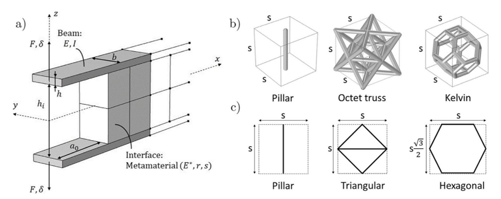

Research / Architected interfaces
Architected interfaces
Putting architecture into the interface itself: geometry that guides cracks, separates strength from toughness, and lets bonded structures be taken apart.
Architected interfaces sit at the crossroads of all three fields. When they overlap, the interface becomes something we can design: geometry such as patterned surfaces, pillars, lattices or designed crack planes controls how an adhesive wets the surface during bonding, and how a bonded or layered material later fails.
This makes it possible to separate toughness from strength, to make crack growth stable or deliberately intermittent, and to build interfaces that hold in service but can be separated when needed. The work is collaborative, with partners at the University of Pennsylvania, the University of Edinburgh and UCLouvain.
Topics
- Geometric control of the fracture process zone
- Surface geometry for wetting and fracture
- Pillar and lattice interfaces
- Surface patterning of delamination
- Metadhesives
- Programmable separation

A new platform for fatigue testing and fatigue-driven materials design, funded by the Carlsberg Foundation, supports work across composites, bonded joints and architected materials.
Related projects
- DuMats: Durable & sustainable metal–polymer hybrids via architected surfacesInnovation Fund Denmark · Grundfos
- Metadhesives: Architected adhesive interfaces for structural systemsUKRI EPSRC
- Rupture of architected materialsVILLUM Experiment
- Platform for fatigue testing and fatigue-driven materials designCarlsberg Foundation
Key papers
- 2026S. Fulco, M.K. Budzik, K.T. TurnerArchitected interfaces: Tailoring toughness and adhesion through geometry, invited ’perspective’ article to npj Metamaterials, 2, 1-10.
- 2026P. Hu, M.K. BudzikDesigned intermittency in interlaminar fracture via kirigami-induced crack-front widening, Comp. Sci. Technol. 279, 111611 (2026).
- 2025P. Hu, S. Li, M.K. BudzikDecoupling fracture energy from crack area via surface patterning, Surf. Interfaces 62, 106066 (2025).
- 2024M. Hedvard, M.A. Dias, M.K. BudzikToughening mechanisms and damage propagation in Architected-Interfaces, Int. J. Sol. Struct. 288, 112600 (2024).
- 2024S. Fulco, M.K. Budzik, K.T. Turner, E.B. BainControlling process zone via geometry to enhance toughness, J. Mech. Phys. Solids, 105548 (2024).
- 2024P. Hu, M.A. Dias, M.K. BudzikGeometric tunability of delamination resistance, Comp. Part B 287, 111839 (2024).
- 2022S. Fulco, M.K. Budzik, K.T. Turner, E.B. BainDecoupling toughness and strength through architected plasticity, Ext. Mech. Lett., 101912 (2022).
- 2021A.E.F. Athanasiadis, M.A. Dias, M.K. BudzikCan confined mechanical metamaterials replace adhesives?, Ext. Mech. Lett. 48, 101411 (2021).
- 2020S. Heide-Jørgensen, M.K. Budzik, K.T. TurnerMechanics and fracture of structured pillar interfaces, J. Mech. Phys. Solids 137, 103825 (2020).
The three fields
Fibre & laminated composites
Fibre-reinforced and laminated materials: how they fail, how long they last, and how to design and manufacture them across scales.
Explore →Adhesive bonding
Adhesion from surface to structure: how adhesives wet, cure and age, how surface chemistry and geometry control a bond, and how joints perform and fail.
Explore →Mechanical metamaterials
Materials whose behaviour comes from architecture rather than composition: lattices, cut and folded sheets, foams, and natural architected materials such as bone.
Explore →